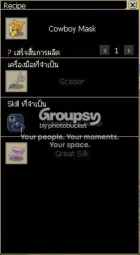
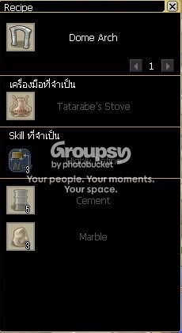

พัดกระดาษ(harizen)
viewtopic.php?t=11312&postdays=0&postorder=asc&highlight=%BE%F1%B4&start=0
หน้ากากขนนก(Wing Mask)
viewtopic.php?t=13162
หน้ากากตัวตลก(Pelsona)

เมือของครบแล้วก็ไปทำที่ร้านเครื่องประดับที่อัพทาวน์เลือกคำสัง"สั่งทำเครื่องเพชร"
ข้อมูลประกอบ
viewtopic.php?t=10121&highlight=pelsona
แว่นตา
viewtopic.php?t=05257
ร่ม(Parasol)
viewtopic.php?t=12229
ชุดพละ(Leotard & Lower Gymnastic Clothes)
viewtopic.php?t=07489
ที่คาดผม Maid(Round Filet)
viewtopic.php?t=07173
หน้ากากหิน(Stone Mask)

ทำที่ร้านเครื่องประดับเมืองอัพทาวน์เช่นกัน
หน้ากากคาวบอย(Cowboy Mask)


Great Silk สกัดมาจาก Great Cotton นั่นเอง เอากรรไกรไปด้วย คุยกับร้านเครื่องประดับเมืองอัพทาวน์เช่นกัน
เขาสัตว์(Gazelle Horn)
viewtopic.php?t=16034
เป้ไอพ่น(Shoulder Devil-Boost)
viewtopic.php?t=15432
ย้อมสีเป้ไอพ่น
viewtopic.php?t=20564
ดอกไม้บนหัว(Happy Flower)
viewtopic.php?t=15779&highlight=happy+flower
กระเป๋าไทนี่(Tiny Case)
viewtopic.php?t=16591
หมวกราชา หรือ หมวกไทนี่(Tiny Crown)
viewtopic.php?t=17003
คฑาดอกไม้(Packet Lord หรือ Bucket Rod)
viewtopic.php?t=13304
ไม้เท้าท่านเจ้าคุณ(Steak)
viewtopic.php?t=13197&postdays=0&postorder=asc&start=435
กระเป๋าพยาบาลคาดเอวหลากสี(First Aid Bag)
viewtopic.php?t=13197&postdays=0&postorder=asc&start=40
พลั่ว(Shovel)
viewtopic.php?t=13197&postdays=0&postorder=asc&start=120
เสื้อเกาะอก(Airy Tops)
viewtopic.php?t=6552&start=0
ตะกร้าสะพายหลัง(Basket)
viewtopic.php?t=90&postdays=0&postorder=asc&start=345
เป้เลเวล20(Big Shoulder Back)
viewtopic.php?t=11883&postdays=0&postorder=asc&highlight=%E0%BB%E9&start=0
หมวกทาทาบีเลเวล35(Casino Bandana)
viewtopic.php?p=110706#p110706
สร้อยกันคนสิงตาย(Yurikago Pendant)
viewtopic.php?t=18206
เป้สีฟ้า(Great Shoulder Back หรือ Smart Ruck )
viewtopic.php?t=17682&start=30
โล่หนาม(Spike shield)
viewtopic.php?t=17682&postdays=0&postorder=asc&start=45
พิณ(Soul Harp)
viewtopic.php?t=18899
ผ้าคาด+AGI 1 ของ Scout (Forehead Band)
viewtopic.php?t=18805
แว่นตาม่วง และ หน้ากากดำน้ำ(Snockle)
viewtopic.php?p=383507#383507
เครื่องประดับมือซ้ายของนักเวท(Red,Blue,White Talisman)
viewtopic.php?t=7130
รวมวิธีทำเครื่องประดับอื่นๆ 1
viewtopic.php?t=6519&postdays=0&postorder=asc&start=0
รวมวิธีทำเครื่องประดับอื่นๆ 2 (ครอบจักรวาล)
viewtopic.php?t=24134&highlight=female+tear
ชุดว่ายน้ำหญิง(Swimsuit(W))
viewtopic.php?t=20216
viewtopic.php?t=54548
หมวกหมีแพนด้าและกระเป๋าแดงหรือดำ(Eurasia Trunk (Black or Red))
viewtopic.php?t=22111&postdays=0&postorder=asc&start=0
viewtopic.php?t=13197&postdays=0&postorder=asc&start=1275
เปา เปา (Chingon Cover)และวิธีย้อมสี
viewtopic.php?t=22041
กระดิ่ง(Bell)
viewtopic.php?t=17682&postdays=0&postorder=asc&start=75
เควสวาเล็นไทน์ หางกับปีก(Lovely Angle Wing , Dominion Tail)
viewtopic.php?t=37603&postdays=0&postorder=asc&start=0
เควสวาเล็นไทน์ ประดับอกกุหลาบ(Red or Blue Rose Tie)
viewtopic.php?t=17682&start=120
เควสวาเล็นไทน์(ต่อเนื่องจาก 2 อันข้างบน)เอาเน็คไท(Pink or Blue Ribbon Tie)
viewtopic.php?t=37654
สร้อยเพิ่ม exp ของสาย Bp (Shidan Pendant)
viewtopic.php?t=41819
เสื้อและกางเกงและรองเท้าลายเสือดาว(Animal Pants(M)&Animal One-piece(W))
viewtopic.php?t=58777
ชุดทหารประจำทิศ(Military Unifrom Senior Policeman)
viewtopic.php?t=54182
ไอเท็มที่ทำได้แต่่ไม่มีใน Recipe
viewtopic.php?t=59031
วิธีทำที่ซ่อมเครื่องประดับ(Accessory Repair Kit)
viewtopic.php?t=21798&postdays=0&postorder=asc&start=0
viewtopic.php?t=19341&postdays=0&postorder=asc&start=0
รวมวิธีทำของแต่งบ้าน 1
viewtopic.php?t=20279&postdays=0&postorder=asc&start=90
รวมวิธีทำของแต่งบ้าน 2
viewtopic.php?t=21977&postdays=0&postorder=asc&start=330
รวมวิธีทำของแต่งบ้าน 3
viewtopic.php?t=27877
รวมวิธีทำกระถางต้นไม้
viewtopic.php?t=26313
เชิงเทียน(Candle)
viewtopic.php?t=17682&start=60
พื้นหญ้า(Grass)
viewtopic.php?t=19742&postdays=0&postorder=asc&start=375
โต๊ะ(Deluxe Table(Blue))
viewtopic.php?t=19742&postdays=0&postorder=asc&start=465
เตาผิง(Fireplace)
viewtopic.php?t=19742&postdays=0&postorder=asc&start=510
เสาอิฐ(Giant Obelisk)
viewtopic.php?t=17682&start=120&postdays=0&postorder=asc&highlight=
เสาโค้ง(Dome Arch)


เสาหิน(Monolith)

เสามีช่อดอกไม้(Vine)

วิธีทำรูปติดผนังบ้าน 6 เมือง 6 รูป(Mulkut , Uptown , Downtown , Nothan City , Far East , Morg City)
viewtopic.php?t=54302
อาชีพนักแต่งบ้าน(Gardener)
viewtopic.php?t=57526
เปิดบ้านGM
viewtopic.php?t=27226&highlight=%BA%E9%F2%B9
viewtopic.php?t=27212
ลิงค์แสดงของแต่งบ้านทั้งหมดจากประเทศญี่ปุ่น(โหลดโหด)
http://ec.gamedb.info/wiki/FlyGarden/Co ... ories.html
Eng ver.
http://translate.google.co.th/translate ... l=ja&tl=en